EVOSONIC 1000
Ultrasonic Cleaning System
A 950-litre single-chamber aqueous ultrasonic cleaning system with a motorised lid, integrated dual-stage filtration and full Siemens PLC control from a 7″ touch screen — with secure remote support access. Supplied and supported by Kleentek Australia.
Important — Read Before Operation
This manual covers the control software, operation, process and servicing of your Kleentek Australia EVOSONIC 1000 (model EVS 950) ultrasonic cleaning system. It documents the touch-screen interface (MMI), the cleaning and maintenance programs, the process start conditions, the tower-lamp status indications, the alarm list and the routine servicing requirements.
The instructions should be carefully studied by machine operators and service mechanics before the machine is operated. Operators should be familiar with Sections 1–3 and 6–7 before running a cycle; supervisors and service staff should also read Sections 2, 4, 5, 8 and 9. Keep this manual with the machine.
Quick Start Guide
At-a-glance operation for trained operators. This is a summary only — read Sections 1–9 for full detail, safety information and troubleshooting before operating the machine.
1 · Start of Day
- Check the bath level — top up if low (Fill Bath, Section 4).
- Switch on at the isolator and log in at your level.
- Set the temperature (25–80 °C) and let the bath heat.
- If the solution is fresh or topped up, run Degas with no load.
2 · Run a Cleaning Cycle
- Load the basket and close the lid.
- Select a program (1–4) on the Home screen.
- Press the Start switch.
- Monitor the cycle on the main screen.
- At the end, raise & drain the basket, then unload.
3 · Pause / Stop / Reset
- Stop switch — pauses the cycle.
- Start again — resumes from where it stopped.
- Hold Stop 3 s — resets the process.
Won't Start? Check
- Process-tank level high
- Pump & heater feedbacks ON
- Temp ≤ set point · RTD healthy
- No surge-arrestor fault
Tower-Lamp Status
Green — running, or ready to start (blinking).
Orange — paused, or maintenance / test in progress.
Red + buzzer — fault / alarm, or lid moving. Full legend: Section 7.
If an Alarm Appears
- Note the message on the Alarms screen (mute the buzzer there).
- Rectify the cause — see the alarm table in Section 8.
- Press the Fault Reset switch to clear it.
Safety Essentials
- Never run the bath dry — heaters and resonators must always be covered by liquid.
- The lid must be closed for a cycle to run; keep clear of the powered lid as it moves.
- Isolate the power before any service or before opening a panel or filter housing.
- No acids, halogens or flammables in the bath — they damage the machine and create hazards.
PDF Quick Start GuideSingle page · print & laminate for the machine ↓
System Overview
The EVOSONIC 1000 (model EVS 950) is a single-chamber aqueous ultrasonic cleaning system with integrated filtration, a power-operated lid and full PLC control. Components are cleaned in baskets lowered into a single heated process tank by the combined action of ultrasonic cavitation, heat and chemistry, while continuous filtration keeps the bath clear. The machine is largely self-contained — it needs only a three-phase electrical supply and clean water to operate — and measures approximately 2910 × 1630 × 1380 mm (L×W×H).
Heavy baskets are best handled with an overhead hoist; loading and unloading is then done from the hook above the tank once the powered lid has opened. All operation is from a 7″ colour touch screen, and a built-in industrial router allows secure remote support and diagnostics.
How Ultrasonic Cleaning Works
Effective ultrasonic cleaning depends on four factors working together — cavitation, chemistry, temperature and time. The EVS 950 brings all four to bear in a single tank:
Up to ten 25 kHz generators drive tube resonators in the tank. The sound waves form and violently collapse microscopic bubbles throughout the solution, scrubbing every wetted surface — including blind holes and recesses a brush cannot reach.
An aqueous detergent lifts and emulsifies oils, greases and particulate soils so the cavitation can carry them away into the filtration circuit.
A heated bath markedly increases cavitation intensity and chemical activity. The controller holds the tank at the program set point.
Each program sets the cleaning duration, so results are consistent and repeatable from batch to batch.
The Cleaning Cycle
In normal use the operator selects a program and presses Start. The controller then runs the cycle automatically:
- Pre-filtration circulates and clears the bath before cleaning (time set per program).
- Ultrasonic clean runs the generators at the set power for the set cleaning time while the bath is held at temperature.
- Post-filtration polishes the bath afterwards, removing the soils just released.
- The cycle ends; the operator raises the basket, lets it drain over the tank, and unloads.
See Section 3 — System Operation for how to select, edit and start programs, and Section 6 — Process Overview for the conditions that must be met before a cycle will run.
Filtration & Bath Management
Solution overflows the process tank into a pocket (weir) tank, from which the filtration pump draws it through dual stainless bag-filter housings — a coarse and a fine cloth bag (100 micron and 50 micron) — before returning it, clean, to the process tank. Removing particulate continuously keeps the bath clear, protects the finish on cleaned parts and extends solution life. The filter-housing pressure gauge shows when the bags are loading up and due for replacement, and the controller tracks a filter-change counter (Section 4).
Heating & Temperature Control
Electric screw-in water heaters, each with its own controller and over-temperature limiter, bring the bath to temperature. A PT100 RTD sensor feeds the controller (through a signal isolator) for closed-loop control to the HMI set point, and an independent thermostat provides a second layer of over-temperature protection.
Power-Operated Lid & Safety Interlocks
The tank lid is motor-driven (a brake-geared motor and stainless chain drive) with open, middle and close position sensors and a lid interlock. The process will not run unless the lid is correctly closed, and dedicated alarms flag a lid that fails to open or close within the expected time. Protective interlocks — low process-tank and weir-tank level, lid position, over-temperature (RTD and thermostat), surge-arrestor and emergency stop — stop the machine safely if a fault occurs.
Controls, Monitoring & Remote Access
The machine is controlled by a Siemens S7-1200 (CPU 1214C) PLC with a 16-input / 16-output expansion module, operated from a Siemens TP700 Comfort 7″ touch HMI. From the panel the operator selects programs, sets temperatures and times, monitors the tank mimic and ultrasonic generators, and reads the digital I/O. An eWON Cosy+ industrial router provides secure remote access for support and diagnostics. A three-colour tower lamp with buzzer shows machine status at a glance (Section 7).
Technical Specification
| Overall machine size (L×W×H) | 2910 × 1630 × 1380 mm |
| Process tank — effective (L×W×H) | 1800 × 750 × 750 mm · height 1232 mm |
| Tank material | SS 316, 3 mm |
| Tank capacity | 950 litres (to overflow at 750 mm) |
| Pocket (weir) tank (L×W×H) | 350 × 750 × 760 mm |
| Basket — outer size (L×W×H) | 1700 × 680 × 550 mm · up to 600 kg |
| Outer canopy / cover | SS 304, matt buffing, coated sheet |
| Ultrasonic frequency | 25 kHz (tube resonators, URT-25 type, 572 mm) |
| Ultrasonic generators | Advanced Cleaning Generator (ACG) type — control supports up to 10 |
| Level switches | 2 × Endress+Hauser FTL31 (process & weir tanks) |
| Filter housings | 2 × SS 304 bag-filter housing, Ø7″, 16″ long, 2″ connection, Viton seal |
| Filters | Cloth bag — 100 micron & 50 micron |
| Filtration pump | Grundfos CM5-2-A-R-A-V AVBV · 0.84 kW · 5 m³/h · 14.7 m head |
| Heaters | Electric screw-in, with controller & temperature limiter (JEKA) |
| Temperature sensor | RTD PT100, 200 mm (Radix), via PT100→0–10 V isolator (0–100 °C) |
| Lid | Motorised — brake-geared motor & SS-304 chain drive, position-sensed & interlocked |
| Mains supply | 3-phase 415 V + Neutral, 50 Hz |
| Mains protection | 63 A |
| Total connected load | ≈ 39 kW · ≈ 56 A (approx.) |
| Control supply | Siemens SITOP 24 V DC, 6.2 A |
| PLC | Siemens S7-1200, CPU 1214C (14 DI / 10 DO / 2 AI) + 16 DI / 16 DO expansion |
| Total I/O | 30 digital inputs · 26 digital outputs · 2 analog inputs |
| Operator interface | Siemens TP700 Comfort, 7″ colour touch (800 × 480) |
| Remote access | eWON Cosy+ WiFi M2M router (WiFi & LAN) |
| Safety | Schmersal SRB301MC E-stop safety relay · 3-phase surge arrestor |
| Status indication | Tower lamp (red / amber / green) with buzzer |
Preparation Before Start-Up
Commissioning and day-to-day start-up should be carried out only by personnel familiar with these instructions and with the relevant work-safety and accident-prevention regulations. The steps below take the machine from installation through to a degassed, heated cleaning bath ready for production. Read this section in full before the first start-up.
Siting & Installation
Position the machine on a firm, level floor able to carry its filled weight — the process tank alone holds 950 litres of solution, so the unit weighs well over a tonne when full. Allow for its 2910 × 1630 mm footprint plus working space.
- Leave clearance on all sides for the lid to open, for basket handling and for service access, and keep the ultrasonic generator cooling vents clear so warm air cannot accumulate.
- Keep the machine away from direct draughts, heat sources and heavy dust.
- Provide local fume extraction or good ventilation above the tank — a heated aqueous bath gives off water vapour and detergent mist.
- Make sure the supply isolator, the drain point and (where used) the overhead hoist are all within easy reach of the operating position.
Filling the Bath
The bath can be filled manually through the fill ball valve or via the controller's Fill Bath function, which opens the auto-fill valve while you remain on that screen (Section 4). Fill with clean water until the process-tank level switch is immersed; the pocket (weir) tank then holds the working reserve that the filtration pump circulates. Where possible use softened or de-mineralised water — it reduces scale on the heaters and tank, limits spotting on finished parts, and keeps the bath clearer for longer.
Preparing the Cleaning Solution
The EVS 950 runs on water plus an aqueous cleaning concentrate. Always add the concentrate to the water — never the other way around — and let the filtration pump circulate the bath for a few minutes to mix it thoroughly before heating.
- Use only the aqueous detergent specified for the machine, at the supplier's recommended concentration and pH. Do not add acidic or acid-forming additives, halogenated compounds (chlorine, fluorine, bromine or iodine), or flammable solvents — acids and halogens can pit the stainless tank and resonators, and flammables present an explosion risk.
- Check the bath concentration regularly and top up the concentrate as parts and drag-out deplete it.
- Remember that a strongly alkaline bath can attack aluminium, zinc and some light alloys — choose the concentration and contact time to suit the parts being cleaned.
Setting the Temperature
Set the bath temperature on the HMI; the controller then heats the process tank to that set point and holds it. Warm solution cavitates far more effectively than cold, so cleaning performance improves markedly with temperature.
- Cleaning programs accept a control temperature of 25–80 °C; the test / maintenance set point ranges 10–80 °C.
- Allow time for the bath to reach temperature before the first cycle, and keep the lid closed during heat-up to save energy and reduce vapour.
- Do not exceed the detergent supplier's maximum temperature.
Degassing the Bath
Fresh solution and freshly added water are saturated with dissolved air. Until that air is driven off it cushions the imploding cavitation bubbles and noticeably reduces cleaning power. Before the first production cycle — and again after any large top-up — run the dedicated Degas function (Section 4) on the filled, heated bath with no parts loaded, until cavitation sounds even across the tank.
Mains Electrical Supply
The system requires a 3-phase 415 V AC, 50 Hz supply with neutral, fed from a 63 A protected supply; the total connected load is approximately 39 kW (≈ 56 A). The final connection must be made by a licensed electrician in accordance with local wiring rules.
- Provide a dedicated, lockable isolator next to the machine, with appropriate over-current and earth-leakage protection.
- Confirm correct phase rotation so the filtration pump turns the right way — a centrifugal pump run in reverse gives poor flow and can be damaged.
- Verify protective-earth continuity before energising the machine.
First Start-Up Sequence
- Confirm the tank is filled to the level switch and the cleaning solution is mixed to the supplier's recommended concentration.
- Switch on at the isolator and log in at the required level (Section 3).
- Set the required temperature on the HMI and allow the bath to reach the set point.
- Degas the heated bath with no load until cavitation is even.
- Re-check the concentration and temperature, then load the first basket, select a program and press Start — see Sections 3 and 6.
Operating the Touch-Panel Interface (MMI)
The EVOSONIC 1000 is controlled by a Siemens S7-1200 (1214C DC/DC/DC) PLC with expansion modules. The operator interface is a 7″ TP700 Comfort colour touch screen (800 × 480), which acts as both display and keyboard. The main screen appears automatically at power-on whenever there is no active alarm.
The main screen shows the current date and time, the process-tank temperature, the logged-in user, the selected program (if any), the lid-bypass state, the process time and any system status messages. Pressing the Alarms key opens the alarms screen at any time.
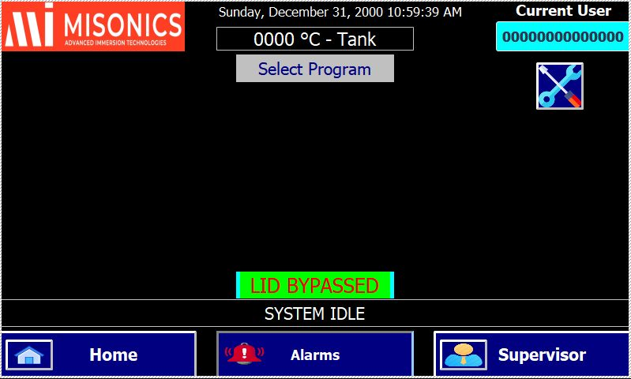
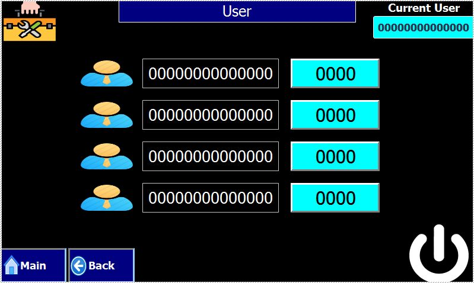
Logging In & User Levels
The machine cannot be operated until the user has logged in at the required security level. Press the Login key on the main screen to open the login screen, then enter a password. If the password is correct the main screen returns and the user name is shown; menus above the user's level remain disabled.
| User | Password |
|---|---|
| User 1 | ＊＊＊＊ |
| User 2 | ＊＊＊＊ |
| User 3 | ＊＊＊＊ |
| Supervisor | ＊＊＊＊ |
What Each Level Can Do
Any logged-in operator can run the machine; configuration and set-up are restricted to the Supervisor (the machine's administrator level). The table below summarises the difference.
| Capability | User | Supervisor |
|---|---|---|
| Operate the machine | ||
| Log in at the required security level | ✓ | ✓ |
| Select a cleaning program (1–4) | ✓ | ✓ |
| Start, pause, stop & reset a cycle | ✓ | ✓ |
| Run fill, drain, filtration & degas functions | ✓ | ✓ |
| Monitor status, the tank mimic & digital I/O | ✓ | ✓ |
| View alarms, mute the buzzer & fault-reset | ✓ | ✓ |
| Adjust brightness, calibrate & clean the screen | ✓ | ✓ |
| Configure & set up — Supervisor only | ||
| Edit cleaning-program data (temperature, times, power, lid) | — | ✓ |
| Edit maintenance-program data (day-end / degas / filtration times) | — | ✓ |
| Set & reset the filter-change and drain counters | — | ✓ |
| Configure shutdown & wake-up heating (days, times, temperature) | — | ✓ |
| Set the lid / heaters time-out | — | ✓ |
| Bypass ultrasonic generators (In Use / Bypass) | — | ✓ |
| Set test / manual-operation values (US power, test temperature) | — | ✓ |
| Rename users & change passwords | — | ✓ |
Selecting a Program
From the main screen press the Home key to open the program-selection screen. Tap the required program number (1–4) to select it; a "program selected" message confirms the choice, and the program cycle, lid and RTD-selection status can be monitored from this screen.
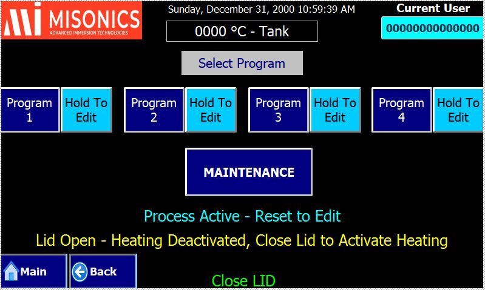
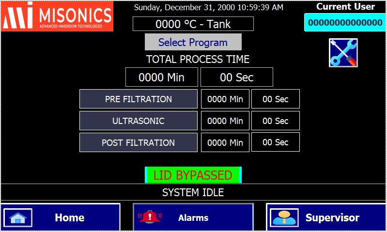
Editing a Program
With a program selected, press and hold the HOLD TO EDIT button for 3 seconds to open that program's data-entry screen. Tap a value field to open the numeric keypad and enter the new value. Programs 2, 3 and 4 are selected and edited in exactly the same way.
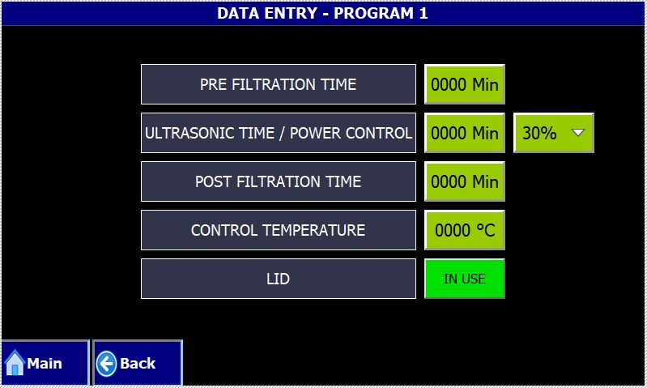
| Parameter | Range |
|---|---|
| Pre-filtration time (minutes) | 1 – 9999 |
| Ultrasonic time (minutes) | 1 – 9999 |
| Ultrasonic power control (%) | 30 – 100 |
| Post-filtration time (minutes) | 1 – 9999 |
| Control temperature (°C) | 25 – 80 |
| Lid | In Use / Bypass |
Each cleaning program therefore runs as a sequence: a pre-filtration period to clear the bath, an ultrasonic clean at the set power and temperature, then a post-filtration period to polish the bath afterwards.
Maintenance & Service Programs
Press the Maintenance key to open the maintenance screen. As with cleaning programs, tap a function to select it and hold its button for 3 seconds to edit its data. The cycle and lid status can be monitored from this screen.
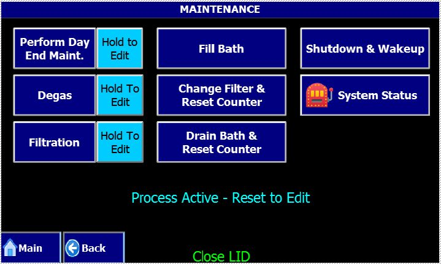
Day-End Maintenance
Runs a filtration pass to clean up the bath at the end of the day. Holding HOLD TO EDIT opens its data entry. On completion it automatically triggers the shutdown & wake-up process.
- Maintenance filtration time (minutes): 1 – 9999
Degas
Runs the ultrasonics with no load to drive dissolved air out of fresh or topped-up solution, restoring full cavitation power.
- Ultrasonic degas time (minutes): 1 – 9999
- Ultrasonic power (%): 30 – 100
Filtration
Runs the filtration pump on its own to clarify the bath between cycles.
- Filtration time (minutes): 1 – 9999
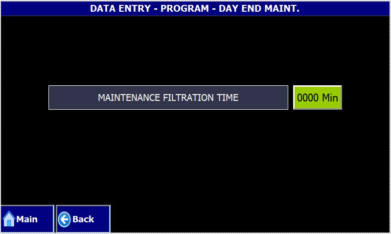
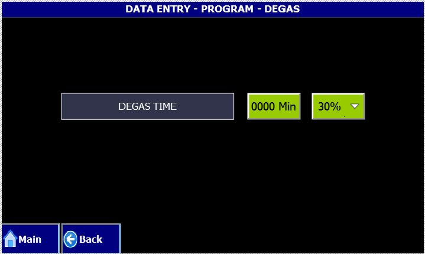
Fill Bath
Select Fill Bath and press Fill to activate fill mode. Stay on this screen while filling — leaving it deactivates fill mode. Open the ball valve to fill, check the bath, and close the valve once the correct level is reached.
Change Filter & Reset Counter
Press Filter Change to enter filter-change mode (stay on the screen, or the mode stops). The screen shows the running filter counter; the Supervisor can set the filter-change cycle target (1 – 999999) and press Reset to zero the counter after fitting new bags. See Section 9 for the physical bag-change procedure.
Drain Bath & Reset Counter
Press Drain to activate drain mode (stay on the screen, or it deactivates). A 60-second timer starts; shutdown mode follows once it elapses. The Supervisor can set the drain counter target (1 – 999999) and reset it.
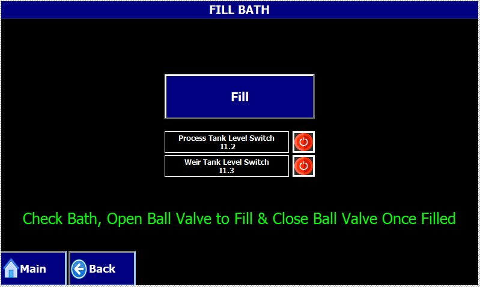
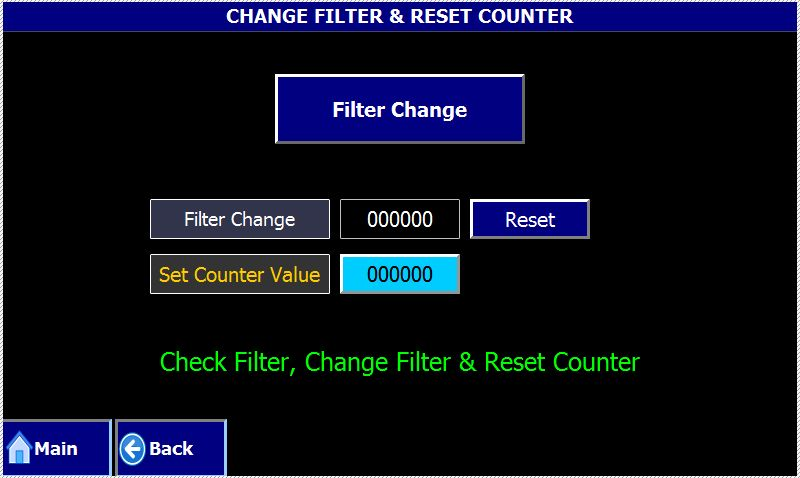
Shutdown & Wake-Up
The shutdown & wake-up process can be started from the maintenance screen, runs automatically after day-end maintenance, and runs on any enabled day once the machine's off-time is reached and the running cycle completes. A 30-second on-screen delay is shown first (it can be skipped by pressing the button again). When sleep time elapses the active program is deselected, the machine — including heating — switches off, and the user is logged off. At the next enabled wake-up time, heating restarts automatically to hold the set temperature and the home screen is shown so a cycle can be started. During sleep the screen prompts "touch anywhere to wake up".
From Shutdown and Wake-up Heating the Supervisor configures idle heating:
- Enable / disable automatic shutdown & wake-up heating.
- Set start and stop times for each day of the week.
- Enable / disable each day individually.
- Shutdown & wake-up temperature: 10 – 80 °C.
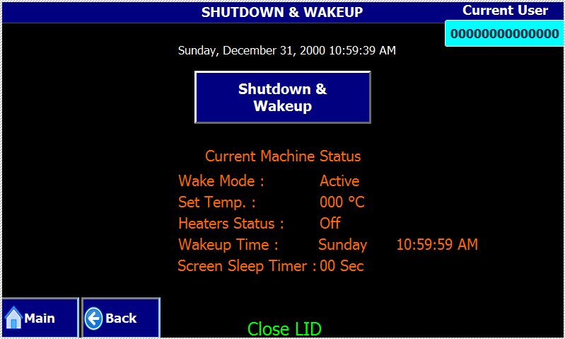
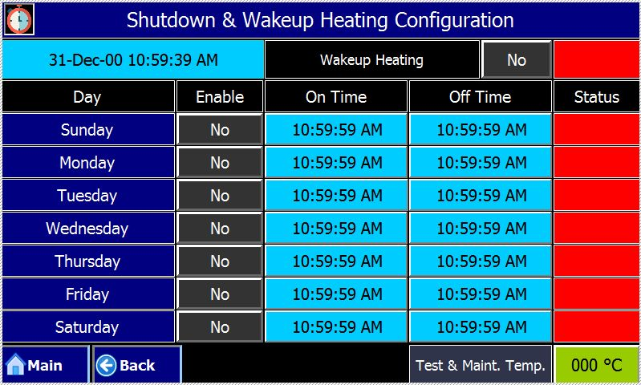
Monitoring & Supervisor Functions
Press System Status from the maintenance screen to view live system status and the running operation on a mimic of the tanks, valves, heater, ultrasonics and filtration pump.
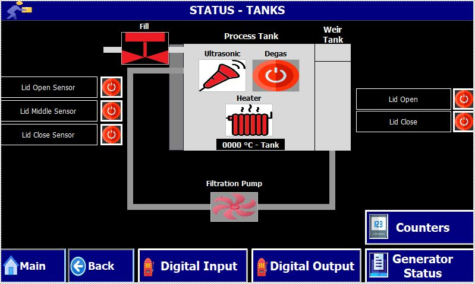
Counters
From the status screen, Counters shows the cycle counters and lets the Supervisor reset the resettable ones:
- Non-resettable — continuous auto-cycle counter.
- Resettable — reset with the RESET key.
- Heater hours of operation — resettable.
- Ultrasonic hours of operation — resettable.
- Lid / heaters time-out (minutes): 1 – 999.
Digital Inputs & Outputs
Digital Inputs and Digital Outputs from the status screen show the live state of every PLC input and output — useful for fault-finding wiring and field devices.
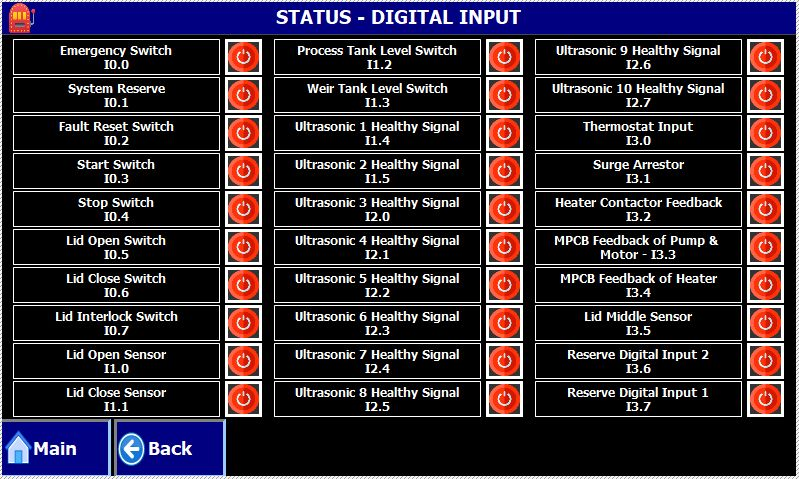
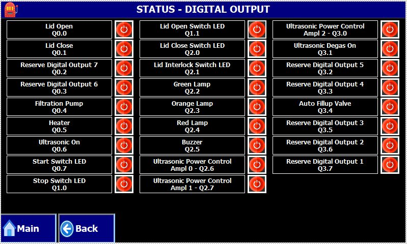
Generator Status & Bypass
Generator Status lets the Supervisor monitor the ultrasonic generators and, if needed, set each of up to ten generators to In Use or Bypass.
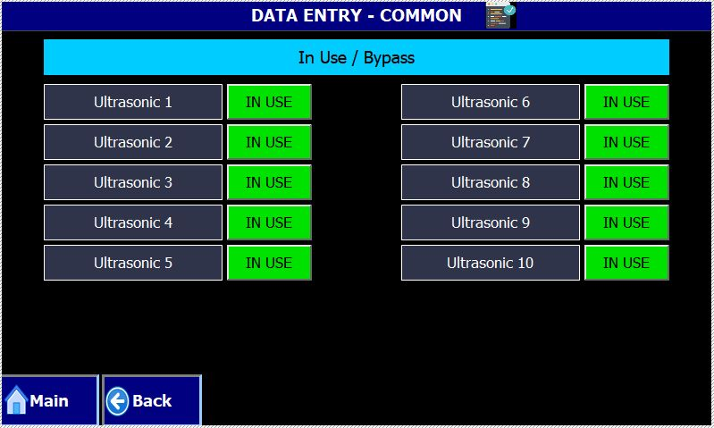
Supervisor / System Menu
Press the Supervisor key on the main screen to reach the system menu. From here:
- Test — manually operate and check individual components (see below).
- Calibrate Screen — calibrate the touch-panel response.
- Clean Screen — lock the touch panel temporarily so it can be wiped down.
- Date & Time Settings — set the MMI and PLC clock (requires the factory password).
- Brightness Settings — adjust the display brightness.
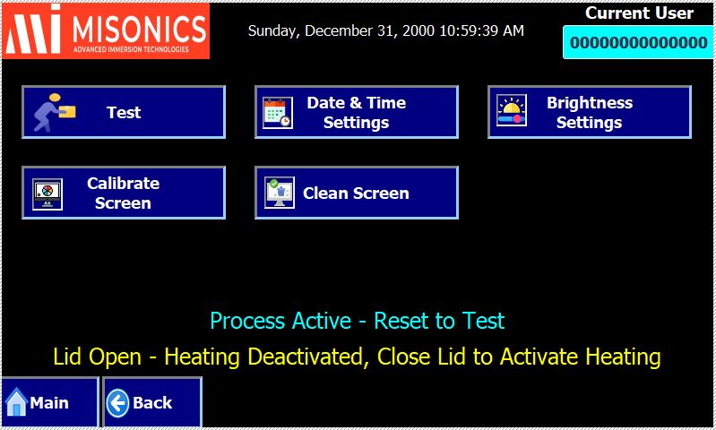
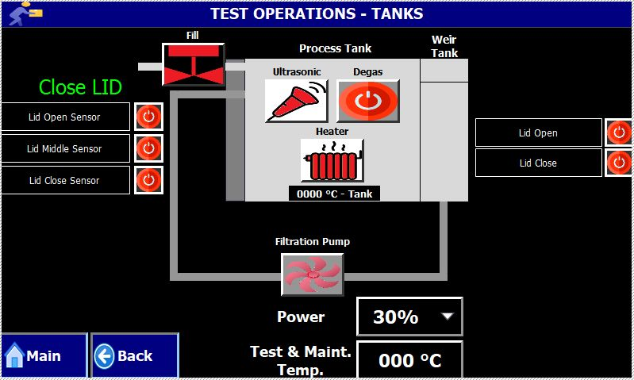
| Parameter | Range |
|---|---|
| Ultrasonic power (%) | 30 – 100 |
| Test & maintenance temperature (°C) | 10 – 80 |
Running a Cleaning Cycle
The full sequence — from preparing the bath through to unloading clean parts — is summarised below. The operator handles the green and blue steps; the controller runs the cleaning cycle itself automatically.
Before a process will run, the controller checks that the machine is in a safe and ready state. All of the following conditions must be met:
- The process-tank level is high — the resonators and heaters must be covered, or they can be damaged.
- All heater and pump feedbacks are ON.
- The liquid temperature is not above the maximum set point and there is no RTD failure.
- There is no surge-arrestor fault.
Starting & Stopping a Cycle
- Select a program on the program-selection screen.
- Press the physical Start switch — the selected program then begins.
- Monitor the selected program and process on the main screen as it runs.
- Press the Stop switch to pause. Press Start again to resume from where it stopped, or hold Stop for 3 seconds to reset the process.
Machine Status by Tower Lamp
The machine's state is shown by a three-colour tower lamp — orange, green and red — used in different patterns. The buzzer can be muted from the alarm screen and auto-mutes after 15 seconds.
Red lamp & buzzer
Green lamp
Orange lamp
Alarms — Cause & Rectification
Press the Alarms key on the main or user screen to open the alarms screen, where active alarms are listed. Buzzer Mute silences the buzzer; History shows the log of past alarms.
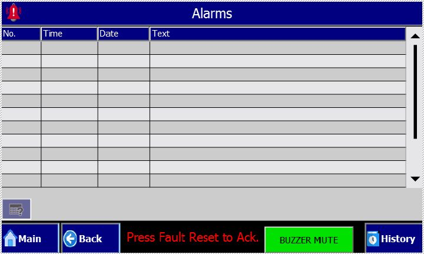
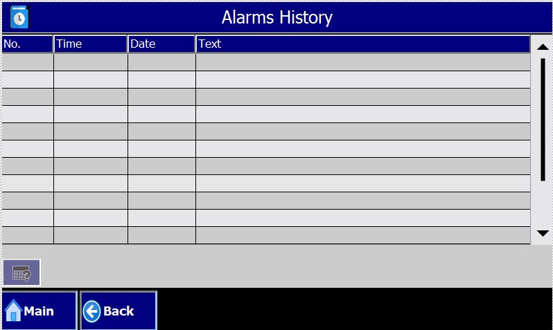
| Alarm | Cause & rectification |
|---|---|
| Emergency switch pressed | Raised when the emergency switch is pressed; no component or mode operates while it is in. Release the switch to clear. If it persists after release, check the switch wiring. |
| Lid multiple input on | Raised when more than one lid input is sensed at once. Check the lid sensor settings and the wiring of the lid inputs. |
| MPCB F/B — pump / motor tripped | Raised in all modes if a pump / motor MPCB is off or tripped. Switch all pump / motor MPCBs on; if it persists, check the feedback-signal wiring. |
| MCB F/B — heater tripped | Raised when a heater MCB is off or tripped. Switch all heater MCBs on; if it persists, check the feedback-signal wiring. |
| Temp. high / low — RTD | Raised if the tank RTD temperature goes above the maximum set point. Check the actual temperature and the set point (set it correctly to avoid nuisance alarms); if it persists, check the RTD and heater wiring. |
| Temp. high — thermostat | Raised if the tank thermostat detects high temperature. Check the actual temperature, RTD, heaters and set points; if it persists, check the thermostat wiring. |
| Heater contactor stuck | Raised if the heater output is on but the contactor is not (or off but the contactor is not). Check the heater contactor operation; if it persists, check the contactor and feedback wiring. |
| Process-tank liquid level low — heating disabled | Raised if the tank level falls below the level switch (heating is disabled). Refill the tank to the level switch to re-enable heating; if it persists, check the level-switch wiring. |
| Weir-tank liquid level low | Raised if the weir-tank level falls below the level switch. Refill to the level switch; if it persists, check the level-switch wiring. |
| Ultrasonic X healthy signal faulty (X = 1–10) | Raised if a generator's healthy signal is off. Check whether that ultrasonic generator is on; if it is and the fault persists, check the healthy-signal wiring. |
| Filter-change counter exceeded | Raised when the filter-change counter exceeds its set value. Press fault-reset to clear for one cycle; reset the counter on the maintenance screen to clear fully. Check / change the filter bags (Section 9). |
| Drain counter exceeded | Raised when the drain counter exceeds its set value. Press fault-reset to clear for one cycle; reset the counter on the maintenance screen to clear fully. |
| Lid not closed | Raised if the process is running and the tank lid is not closed. Close the lid manually; if it is closed, check the lid-close sensor position and wiring. |
| Lid not opening / not closing | Raised if the lid does not open / close within a fixed time. Check the lid motor, sensors and MPCB; if it persists, check the lid-motor wiring. |
| Surge-arrestor fault | Raised if the surge-arrestor input is not on. Measure / monitor the system voltage or check the wiring. |
| Auto fill-up on / liquid not filled | Raised if the auto-fill valve is on but liquid is not filled within the set time. Set the fill time correctly; if it persists, check the fill valve, liquid flow and level switch. |
Maintenance & Servicing
The ultrasonic cleaner must always be kept clean and dry. Carry out all work with the machine isolated unless a live check is specifically required.
Routine Maintenance
- Approximately every 6 months, check the cleaner and blow accumulated dust away with dry compressed air.
- Make sure the generator cooling is always guaranteed — keep the cooling slots clear so air can circulate freely, and do not let warm air accumulate around the unit.
- Avoid scratches in the radiating (resonator) surface — scratches increase erosion due to cavitation.
Changing the Filter Bags
The solution is filtered through two stainless bag-filter housings — a coarse 100 micron bag followed by a fine 50 micron bag. The bags are consumable items and must be replaced when they load up with soil. The on-screen Change Filter function and its counter (Section 4) help you track and carry out the change.
- On the HMI, open Maintenance → Change Filter & Reset Counter and press Filter Change to enter filter-change mode — this stops the filtration pump. Stay on this screen for the duration of the change.
- Close the inlet and outlet ball valves isolating the filter housings, then slowly relieve the pressure and drain each housing back to the tank.
- Undo the housing lid (clamp / swing bolts), lift out the bag-restrainer basket and remove the used bag, letting it drain into the housing.
- Clean the inside of the housing and the sealing face. Inspect the Viton gasket / seal and replace it if it is damaged or perished.
- Fit a new bag of the correct rating in each housing — coarse 100 micron and fine 50 micron — seating it fully over the housing neck so that unfiltered solution cannot bypass it. Refit the restrainer basket.
- Close the lid evenly with the seal correctly located, then reopen the inlet and outlet ball valves.
- Exit filter-change mode and restart filtration. Check the housings and connections for leaks and confirm the pressure gauge returns to its normal (green) zone.
- Press Reset on the Change Filter screen to zero the filter-change counter.
- Dispose of the used bags in accordance with your site's waste procedures — they hold oils and contaminants removed from the parts.
Service
If the unit no longer functions properly, first check the plug and operating elements. Do not open the housing. Repairs may only be carried out by suitably trained staff — inexpert intervention can result in considerable danger to users and to the equipment.
Warranty
A one-year warranty is supplied by the manufacturer from the date of purchase, provided the equipment is operated in accordance with these operating instructions.
Warning — Electrical Safety
Complete Touch-Panel Screen Map
Every screen of the EVOSONIC 1000 touch interface, for reference. See Sections 3–5 for how to navigate between them.
Main & login
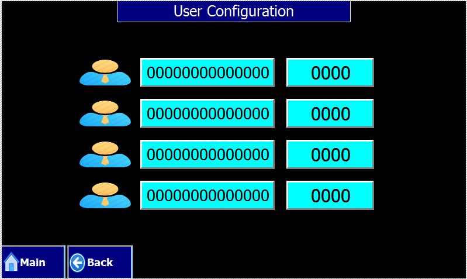
Cleaning programs
Maintenance programs
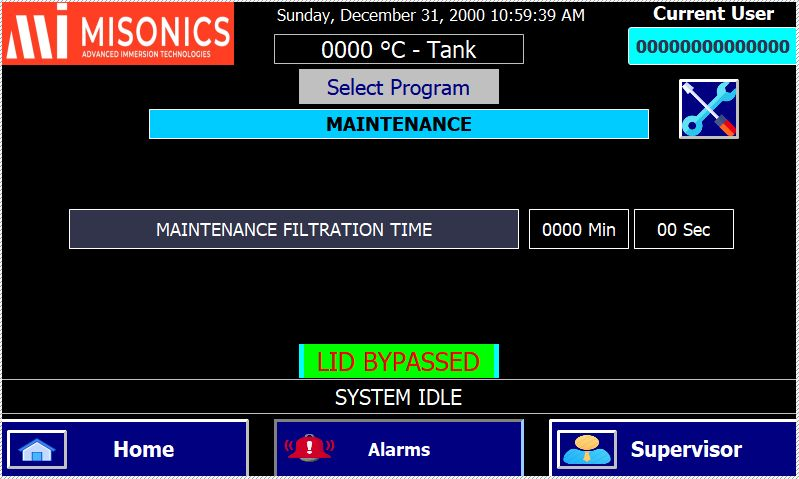
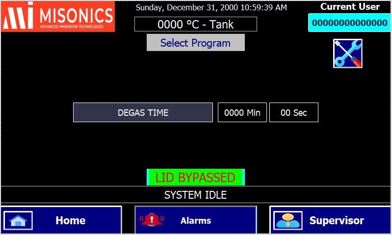
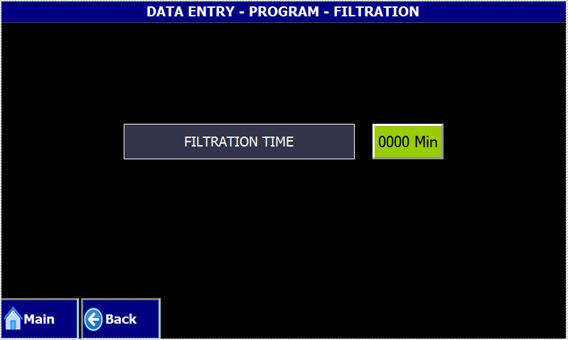
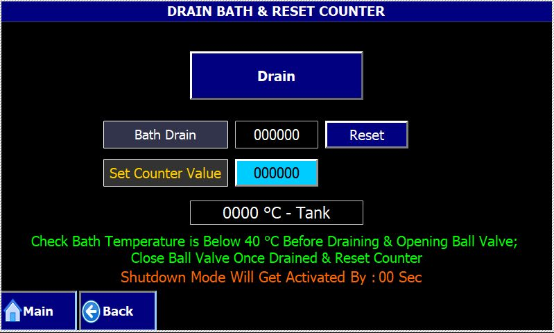
Shutdown & wake-up
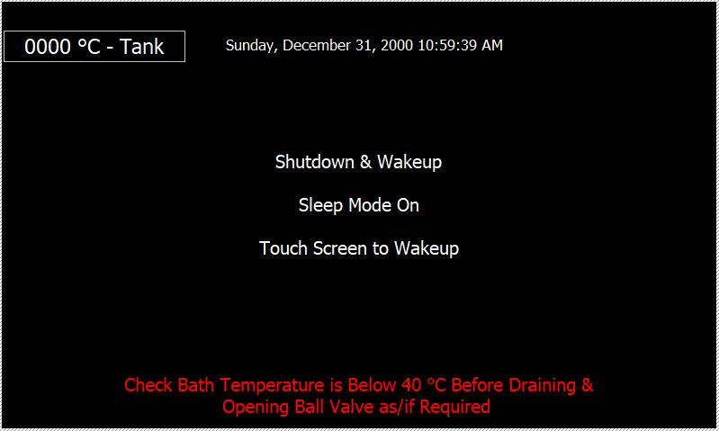
Status & counters
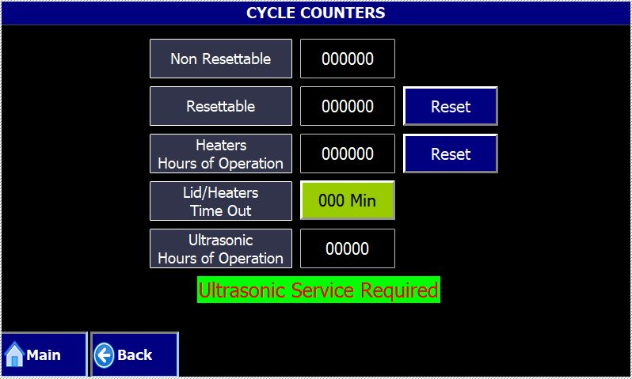
System & settings
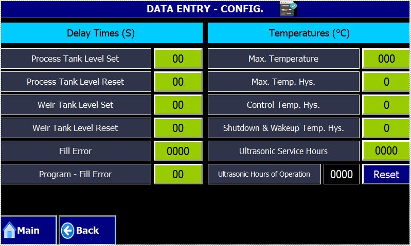
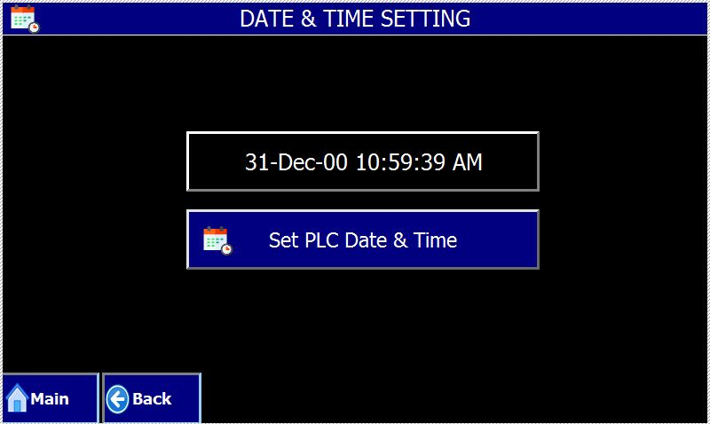
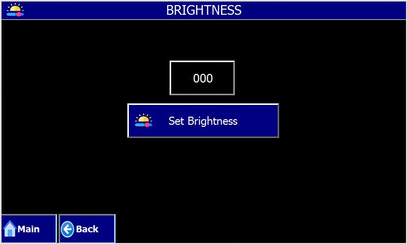
Alarms
Technical Drawings & Lists (PDF Downloads)
The machine's reference drawings and lists are provided here as separate PDFs. Click any item to open or save it.
Manuals (PDF)
Download the entire manual as a single, print-ready A4 PDF, or the one-page Quick Start guide to print and laminate at the machine.